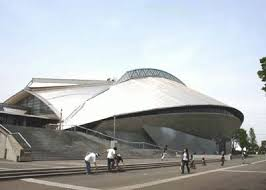
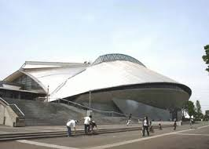
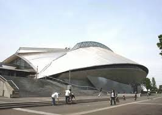

秋葉台文化体育館
 

神奈川県大会で、湘北と海南大附属高校が試合をした体育館は秋葉台文化体育館です。
秋葉台文化体育館は1984年にオープンし、藤沢市北部のスポーツ活動拠点として市民に親しまれています。2つの体育室に武道場と弓道場、トレーニングルームなどの施設があります。

神奈川県大会で、湘北と海南大附属高校が試合をした体育館は秋葉台文化体育館です。
秋葉台文化体育館は1984年にオープンし、藤沢市北部のスポーツ活動拠点として市民に親しまれています。2つの体育室に武道場と弓道場、トレーニングルームなどの施設があります。